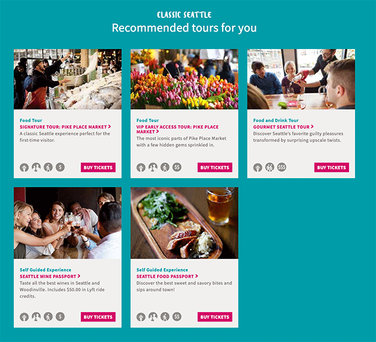

Issue #1
A number of people didn't seem to make use of the top navigation on desktop devices and couldn't find the self-guided tasting passports page.
Potential Solution
We hypothesized that users were mistaking the links for regular text and thought that by adding subtle indications we could overcome this issue.


Results
We decided this would make a simple test and ran that experiment over the period of 1 week. Unfortunately, the results were extremely poor and we decided to end the experiment early as a result.
Issue #2
Lots of people made mention of the fact that they weren't very clear on what they would be able to pick with regards to their tasting options.
Potential Solution
This was proposed and implemented by GLG
Results
This was considered to be particularly low risk and this wasn't run in the form of an A/B test.
However, we don't know what impact that has made as a result.
Issue #3
It took at least one person over 10 minutes to understand that the price included food.
Potential Solution
Identify opportunities to improve the clarity around this fact, primarially through copy updates.
Status
This has yet to be addressed thus far.
Issue #4
We saw people making heavy use of the tour finder to understand our product offerings however, it doesn't feature a blade for any of the Tasting Passport options. While we have some information below, nobody scrolled that far down the page.

Potential Solution
Add the tour finder table

Potential Solution
Update the tour finder
Considerations
- This was quoted as $7,500 just to update the tour finder
- That did not include any kind of testing
- Did not include updating the table
- Main risk is introducting an analysis paralysis style situation
Issue #5
Pricing isn't very clear on mobile devices
Potential Solution
Alternative Solution
Issue #6
A number of users complained about the script font we were using as it made the pricing difficult to read.
Potential Solution
Pick a more appropriate font and replace it across the site or potentially just for the relevant pricing sections.
Status
Yet to be addressed thus far but considered very low risk.
Issue #7
Many of our testers made heavy use of the homepage slider to see our options but we don't currently have a blade for any of our passport options.
Potential Solution
Add a blade for each of the passport options.
Considerations
- Current quoted price to implement this is $3,400 but we can implement most of this already for free.
- Example shown in previous slide was done via the CMS in 10 minutes.
- Overall considered low risk to implement.